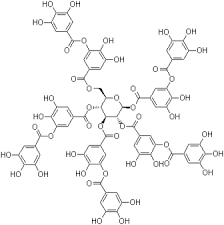
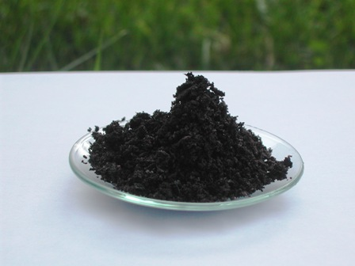
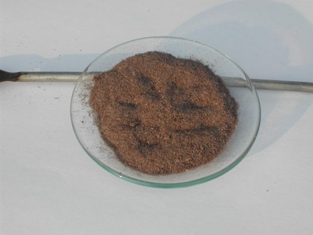
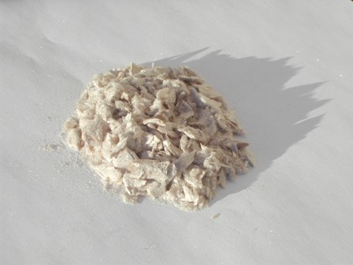

L'acido tannico del commercio si presenta come una polverina amorfa di colore ocra, inodora e di sapore astringente.
La formula è complessa, trattandosi per lo più di una combinazione di cinque molecole di acido digallico col glucosio, dal vecchio nome suggestivo di pentadigalloilglucosio.
Dal tannino si può estrarre per idrolisi la molecola base fondamentale, cioè l'acido gallico o 3,4,5-triidrossibenzoico, una bella molecola polifenolica che mi è sempre stata simpatica dal momento che da giovane la usavo per un giochino molto particolare, del quale non dirò qui.


Pentadigalloilglucosio - Ac. tannico Acido gallico
Ho voluto provare questa conversione idrolitica facendo onore al bravo prof. Salomone e ai suoi "Prodotti chimici organici", ovvero a quella che è da quasi un secolo una "bibbietta" universalmente conosciuta dai chimici sperimentali casalinghi.
Ho verificato in tante occasioni che raramente le "ricette" del Salomone vanno a buon fine così come sono scritte, ma che quasi sempre abbisognano di una personalizzazione decisa, quand'anche di una reinterpretazione completa, quasi che l'Autore abbia voluto infilare in ogni sintesi uno scherzetto per gli sprovveduti.
In ogni caso, in questi tempi nei quali la chimica sperimentale hobbistica sta galoppando verso l'estinzione, il libro si legge sempre volentieri da parte di quell'altro rarissimo tipo di "fossili viventi", cioè quei pochi che ancora si ostinano a giocare con acidi e basi solo per il gusto di farlo e che apprezzano i tempi eroici della chimica sperimentale.
Dal Salomone, magari snobbato da chi sa tutto di orbitali ma non è aduso a sporcare provette, si possono ancora attingere spunti e idee per qualche esperimento.
---
Ecco cosa dice il Salomone riguardo la sintesi dell'acido gallico:
- L’acido gallico o 3,4,5-triossibenzoico C6H2(OH)3.COOH si ricava dal tannino delle noci di galla o dalle foglie di sommacco per idrolisi mediante acido solforico diluito. Si prendono ad es. 100 g di tannino e si addizionano di 10 g di acido solforico diluiti con 500 cm3 di acqua; si riscalda su bagno maria per 10-15 ore sostituendo di tanto in tanto l’acqua che evapora. Si filtra poi a caldo e si lascia raffreddare; l’acido gallico si depone per raffreddamento in cristalli aghiformi, che si depurano ridisciogliendoli in acqua bollente, aggiungendo un po’ di nero animale e poi, dopo filtrazione a caldo, lasciando ricristallizzare.
In un primo tentativo ho seguito alla lettera la procedura (riducendo ad un quinto le quantità).
L'idrolisi del tannino secondo la procedura sopra detta, ancora una volta (e quasi secondo le aspettative...), si è rivelata un totale insuccesso, con resa uguale a zero.
La soluzione di acido tannico è rimasta tal quale e nessuna traccia di acido gallico è rimasta alla fine sul filtro. -Birbante di un Salomone...
Fortunatamente avevo letto, ora non ricordo più dove, di una idrolisi condotta in ambiente ad acidità molto più spinta, addirittura con una soluzione di acido solforico al 20%.
Ho voluto provare allora questa variante, ripetendo l'esperienza come sopra ma aumentando (in proporzione) la quantità di H2SO4 di dieci volte tanto.
L'acido tannico si scioglie perfettamente nella soluzione acida con un colore violaceo, colore che aumenta d'intensità col riscaldamento diventando quasi nero alla fine dell'idrolisi dopo il prolungato riscaldamento, effettuato in un palloncino su termomanto a 90° per mezza giornata.
Col raffreddamento successivo, in fondo al palloncino c'era finalmente un copioso precipitato (buon segno!) anche se purtroppo quasi nero (cattivo segno!).
Ecco il prodotto grezzo, che dopo filtrazione e lavaggio si presenta infatti schifosamente scuro.

Acido gallico grezzo
Ma abbiamo al nostro arco ancora una freccia da tirare... magari anche due... speriamo che vadano a segno.
Si impone una decolorazione con carbone attivo, come del resto già il Salomone consigliava.
Ho sciolto il grezzo in 100 ml di acqua calda (1 g di acido gallico si scioglie in 3 ml di acqua bollente e in 87 ml di acqua fredda) e prima dell'ebollizione ho aggiunto una buona punta di spatola di carbone attivo, facendo poi bollire per qualche minuto.
Dopo la filtrazione a caldo e successivo raffreddamento l'acido gallico si è presentato in maniera decisamente più decente, in piccoli aghetti leggeri, che asciugano con facilità.
Purtroppo il colore, pur essendo schiarito, è rimasto nocciola... in definitiva come un buon vecchio fenolo che si rispetti.

Dopo la prima decolorazione
[Ho un vecchissimo acido gallico commerciale, di colore quasi identico. Ma in questo caso è dovuto alla veneranda età!]
Trascurando volutamente la resa in favore di un prodotto più puro, ho ripetuto la decolorazione con carbone e stavolta l'aspetto del prodotto è decisamente corretto, delicatissimi e leggeri aghetti sericei appena appena beige, da conservare al riparo dalla luce.

Guarda che bello dopo la seconda decolorazione
Lo scopo di questa esperienza era quella di verificare la conversione tannico --> gallico, e mi dichiaro soddisfatto.
La resa è bassina, circa 4,5 grammi, ma sono da considerare tutti i passaggi e le due decolorazioni.
Thats all, volks... Se l'acido mucico dell'altra volta era del tutto inutile, con questo ci posso sempre fare un bell'inchiostro come quello dei bisnonni, a base di gallato di ferro naturalmente!
Stay tuned.